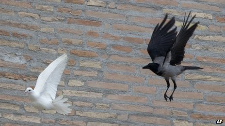

Sunday, January the 26th, 2014
back to: title, date or indexes
An anti-Catholic crow (and a seagull) have been causing a rumpus at the Vatican. I would like to know what the Jesuits' position is on crows, ravens, jackdaws, and other birds of menace.
